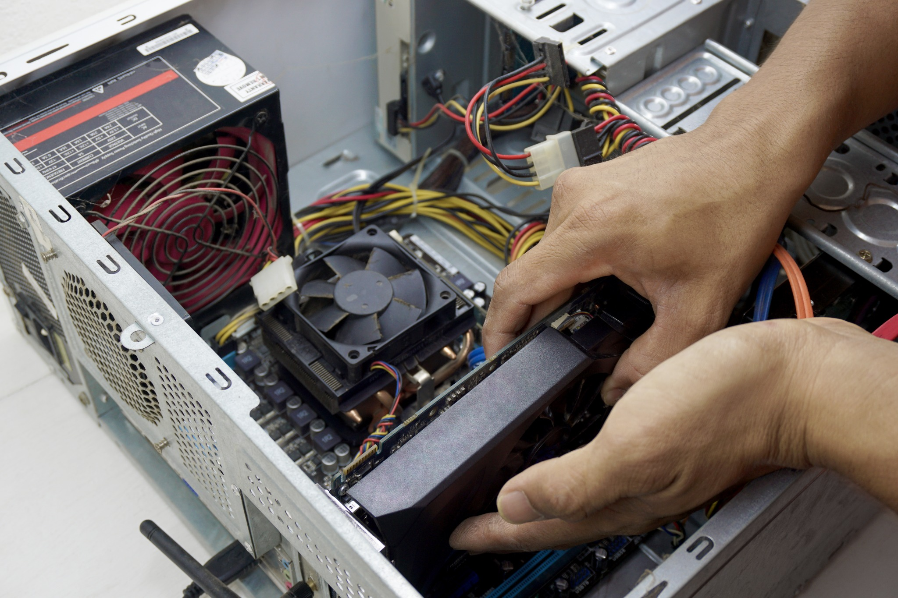
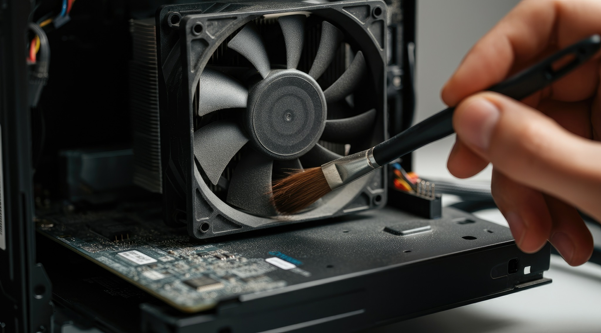
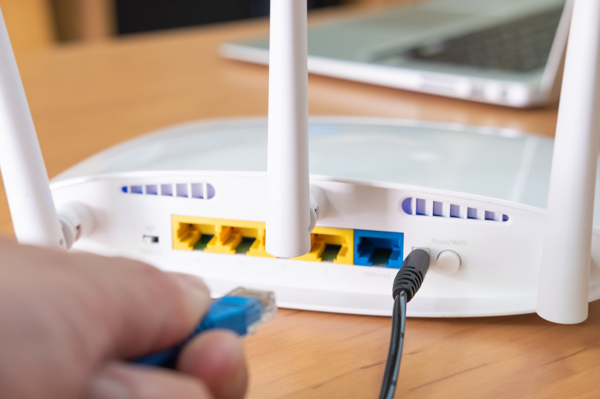
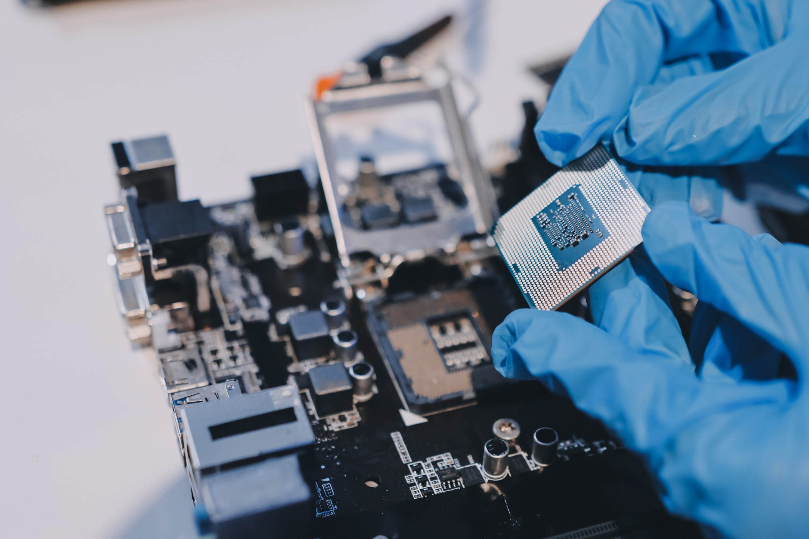
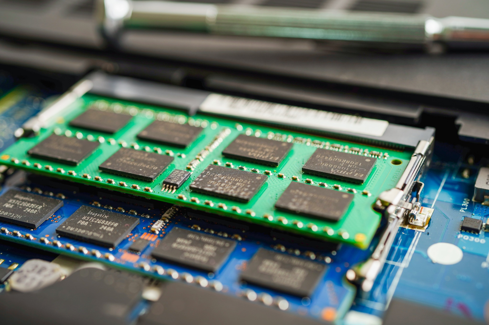
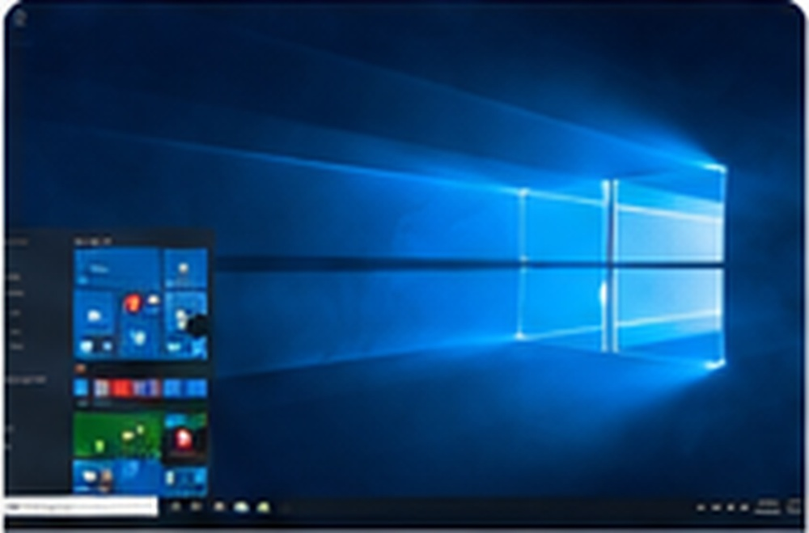
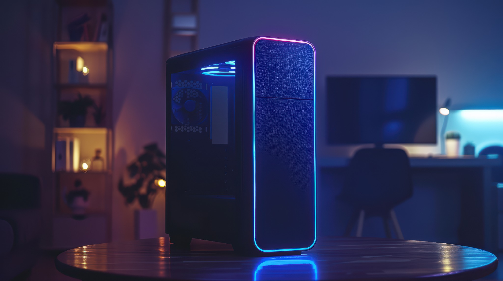
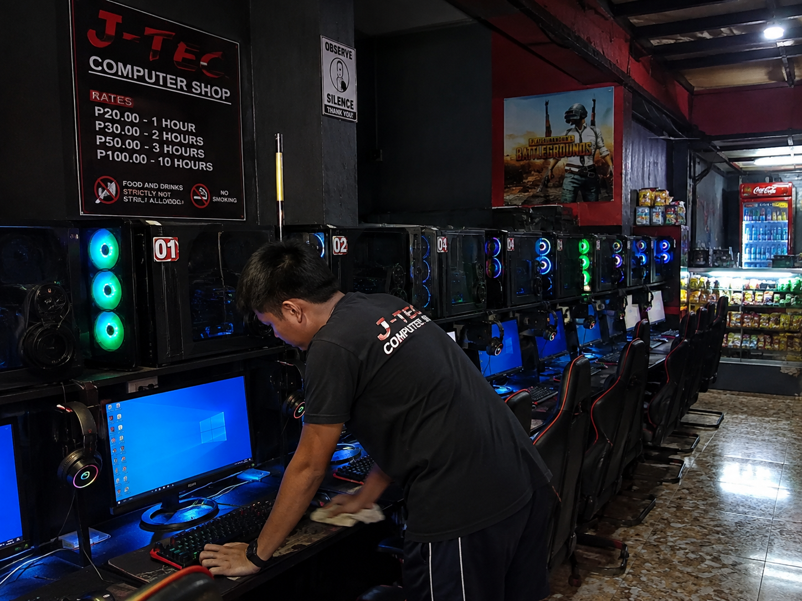

01REPAIR

Computer Repair
Diagnosis and repair for desktops, laptops, hardware faults, system issues and common computer problems.
REQUEST SERVICE →Computer repair, maintenance, networking, software installation, laptop upgrades, custom PC building and remote technical support — handled professionally and conveniently.
We come to your home or location for hands-on computer service.
Repair, upgrade, clean, configure and troubleshoot your computer.
Get assistance for software, settings and troubleshooting when an on-site visit is not needed.
Click any service card to select it automatically in the Job Order Request form.

Diagnosis and repair for desktops, laptops, hardware faults, system issues and common computer problems.
REQUEST SERVICE →
Internal cleaning, cooling checks, thermal maintenance and performance checks to keep your computer running properly.
REQUEST SERVICE →
Wi-Fi, router configuration, LAN setup, Ethernet connections and home or small-office network troubleshooting.
REQUEST SERVICE →
Upgrade RAM, SSD, storage, graphics and other compatible components to improve speed and capability.
REQUEST SERVICE →
Upgrade laptop memory, clean internal components and perform maintenance for smoother everyday performance.
REQUEST SERVICE →
Windows setup, drivers, applications, updates and software configuration for your PC or laptop.
REQUEST SERVICE →
Build a custom PC based on your budget, gaming needs, work requirements and preferred components.
REQUEST SERVICE →Get remote assistance for software, settings, troubleshooting and other issues that can be handled online.
REQUEST SERVICE →
Professional maintenance for computer shops and Pisonet setups. Huge discounts are available for bulk services.
REQUEST SERVICE →Get computer support without transporting your equipment across town.
Submit a Job Order Request, choose your preferred schedule and tell us what you need.
We review your request and reply to confirm the schedule or arrange a better time.
Submit your request with your preferred schedule. JasperPC will receive the job order in our email inbox, review availability and reply to confirm or reschedule.